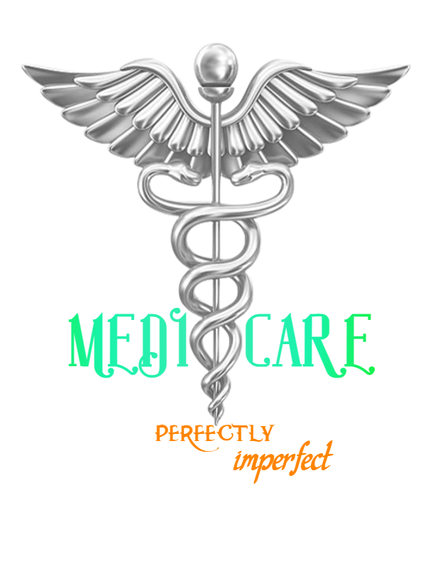

Site Name
Medi-Care Services - Helping you maintain a healthy status till you arrive at your Doctor's
Site Purpose and Goals
At Medi-Care, we are committed to providing relaible, accurate and
effective first-aid and medical information, to help people suffering
from one ailment or the other learn how to identify the symptoms, what
first-aid application to perform, annd connect with the nearest
medical professional to ensure they get proper treatment.
We aim to reduce mortality rate by at least 15% every year. We plan to
achieve this by also promoting healthy lifestyle and giving health
advices to help people maintain good health.
Target Audience
Our goal is to reach everyone, but the priority would be:- Bankers.
- Students
- Industrial workers.
- Stay-at-homes.
The Logo
The logo to be used would be the image below.
If there are other suggestions, it will be made known, as we make frequent, general updates.
Color Scheme
For the color scheme, we would be having a blend of blue, purple, white and red in different shades and varieties.
Typography to be Used
The primary text fonts will be Century, Calisto MT and Cambria.- Site header Calisto 40px
- Primary Navigation Calisto 30px
- Footer Navigation Calisto 20px
- Header 1 (h1) Century 30px
- Header 2 (h2) Century 25px
- Header 3 (h3) Century 20px
- Paragraph text Cambria 16px
Sub-pages
The subpages for the website would be:
- Medical Information page
- Reach a Medical Professional
- About Us
- Frequently Asked Questions